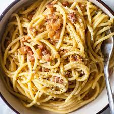

Tasty carbonara recipe

Description
Carbonara is an Italian pasta dish from Rome made with eggs, hard cheese, cured pork, and black pepper. The dish arrived at its modern form, with its current name, in the middle of the 20th century. The cheese is usually Pecorino Romano, Parmigiano-Reggiano, or a combination of the two
Ingredients
- pasta
- eggs
- bacon
- hard cheese
Steps:
- Put a large saucepan of water on to boil
- Finely chop the 100g pancetta, having first removed any rind. Finely grate 50g pecorino cheese and 50g parmesan and mix them together.
- Beat the 3 large eggs in a medium bowl and season with a little freshly grated black pepper. Set everything aside.